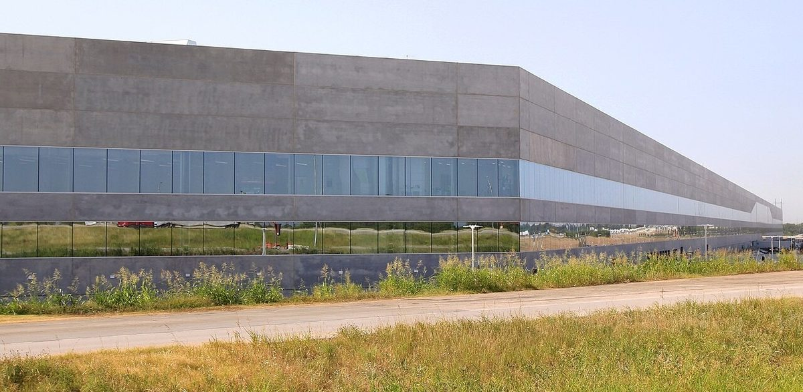

"Bravo to the smaller countries"
FSD (Supervised) won approval in Latvia, Tesla posted new safety figures, and Musk said Austin's robotaxi race "was never a real contest."
"Now approved in Latvia. Rollout begins soon," Tesla Europe posted at 6:36 a.m. EDT on Monday. Musk quote-posted it at 1:33 p.m. with "Supervised FSD approved in Latvia!" (post). Sawyer Merritt counted Latvia as the 10th European country to approve the software, which is called Tesla Assisted Driving in Europe. Quoting that list at 1:38 p.m., Musk wrote: "Bravo to the smaller countries in Europe for moving fastest!"
The safety figures that Musk endorsed late Monday cover about 9.48 billion FSD miles and 1,579 major collisions, Tesla Mag reported; China is not included. Tesla does not assign fault and updates the figures quarterly. The company's safety claims for the software "are highly contested by safety researchers," Reuters noted on Tuesday.
FSD on Turo. Starting October 28, U.S. guests on Turo can search for and book Teslas with FSD (Supervised) activated, with the status checked through Tesla's API, the car-sharing company said in a release. Eligible hosts get a free one-month trial.
Barclays upgrades Tesla
Tesla shares closed Monday at $391.62, up 5.21%, after Barclays analyst Dan Levy upgraded the stock, forecasting 1.80 million deliveries this year and 1.92 million in 2027 after two straight annual declines, Yahoo Finance reported. The note also pointed to "the potential premium from a combination with SPCX," and Barclays sees an all-stock purchase of Tesla by SpaceX as the most likely structure.

Cabs in Austin
"We don't run every day because the line can run so fast, it's currently outpacing our deployments," Tesla vice president of vehicle engineering Lars Moravy said of the Cybercab line in a Munro Live tour published Monday, TeslaNorth reported. Tesla sent more than 50 Cybercabs to the Austin Formula 1 weekend, according to TeslaNorth's account of the tour.
Replying at 12:03 a.m. EDT on Tuesday to a post saying the battle for autonomous rides in Austin might already be over, Musk wrote: "It was never a real contest" (post). At 12:24 a.m. he quote-posted a Cybercab video with the words "A Storm of Cybercabs" (post). In Houston, the Robotaxi zone that grew on Monday now covers 254 square miles, Merritt posted, second only to Austin's 272.